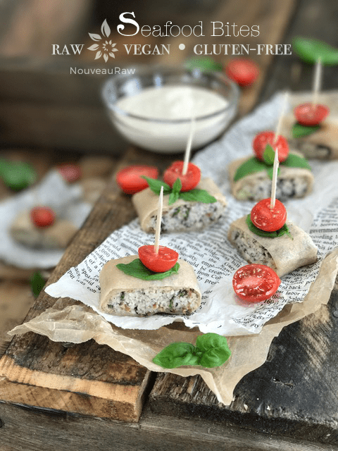

“Seafood” Bites

~ raw, vegan, gluten-free ~
This recipe an by my Creamy “Seafood” Enchiladas. This posting is to show another way it can be plated. Just in case you weren’t seeking a “meal” recipe but instead something that can be served as a finger food.
We are all looking for kitchen timesavers that speed up our food preparations. Don’t get me wrong, there is great joy in preparing food… well, there ought to be because we are ingesting that “energy” so let’s make it count.
More than just ingredients…
Do you believe that foods can absorb more than what just comes from the ingredients being used? This is just my own theory but I 100% believe that if you prepare food while you are in a frenzy, stressed, angry, filled with panic and anxiety, etc… that that very same energy will be in your food. Food for thought (pun intended). So before you start, take the time to calm yourself and think of the wonderful feelings that you are providing to those who eat your creations. Trust me it will taste better.
Anyway, every time I create a dish, I always try to think of multiple ways that it can be used and presented. In the long run, this helps to save time in the kitchen because you can create several dishes out of one.
So when I made my Creamy Seafood Enchiladas, I bent over the enchiladas, propping my elbows on the counter and stared down at them. “What else can I do with you little beauties?” That was when the simple idea of slicing them up and garnishing the tops came to mind. Horsy-dervs! Ok…. hors d’oeuvres. I just like saying it the other way, it’s such a odd looking word to me.
Here’s the scoopy doop, make the enchiladas, but don’t dehydrate them. Wrap them in freezer paper, label, and date, then slide them in the freezer. When the moment arrives where they come in handy… defrost and dehydrate for 1-2 hours. On that day, make the cream sauce and slide the bowl into the dehydrator alongside the enchiladas. This will get everything warm and tasty. Remove and slice the enchiladas into 1″ bite-size pieces, pour the sauce into a dipping bowl and serve. Oh and don’t forget to garnish the tops of them for added beauty in the presentation department. (Bob here: I like a dash of hot sauce on top too.)
Use this dish for everyday snacking or present it beautifully as a precursor to dinner. Have you ever heard of an amuse-bouche? It is a single, bite-sized hors d’œuvre. Although they differ from appetizers in the fact that they offer a glimpse into what is going to be served for the main dinner. The term is French, literally translated as “mouth amuser.” Personally, that just makes me giggle. I think next time we have dinner guests; I am going to approach them with a plate of these on it and ask, “Excuse me, would you care for a mouth amuser?” lol It’s the little things in life that entertain me. I hope you enjoy this recipe and it is also my hope that it inspires you to be creative with each dish you make. Blessings, amie sue

a close up of “Seafood” Bites
Ingredients:
yields 3 (1/2 cup filling each)
Not Tuna filling: yields:
- 1/2 cup (169 g) raw almonds, soaked
- 1/2 cup (88 g) raw sunflower, soaked
- 1/4 cup (50 g) water
- 3 Tbsp (40 g) fresh lemon juice
- 1/2 Tbsp (6 g) kelp powder or 1 sheet nori
- 1/4 tsp (2 g) Himalayan pink salt
- 1/4 cup (50 g) celery, minced
- 1/4 cup (40 g) red onion, minced
- 1/4 cup (6 g) fresh parsley, minced
- 1/2 tsp (1 g) dried dill weed, or 1 Tbsp (2 g) fresh dill weed
- 3 coconut wraps, homemade or store-bought
Béchamel White Sauce – yields 1 1/4 cups
- 1 cup (140 g) cashews, soaked 2+ hours
- 1/2 cup (108 g) water or almond milk
- 1 small clove garlic or 1/8 tsp (<1 g) garlic powder
- 2 Tbsp (20 g) olive oil
- 1 Tbsp (10 g) coconut amino
- 1 Tbsp (3 g) nutritional yeast
- 2 Tbs (16 g) onion granules
- 1/2 tsp (3 g) Himalayan pink salt
- 1/8-1/4 tsp (2 g) freshly grated nutmeg
- 1/4 tsp (2 g) white or black pepper
Preparation:
Not Tuna filling:
- In a food processor, fitted with an “S” blade, place the drained almonds, sunflower seeds, water, lemon juice, kelp, and salt in the processor. Process until almost paste-like. Put into a bowl.
- Or you can use 1 cup (166 g) chickpeas instead of the almonds and sunflower seeds, but cut back on the lemon. The nut/seed version is my favorite, but it’s great to have options.
- I have also made this recipe with 1/2 – 1 sheet of nori torn up and added to the mix while processing.
- Add the minced celery, onion, parsley, and dill. Mash everything together with a fork.
Assembly:
- After either making or purchasing the coconut wraps, lay 3 of them out in front of you.
- Place 1/2 cup of filling along the edge closest to you, then start to roll the enchilada. Once you reach the end, dip your finger into the Béchamel sauce and run it down the edge of the wrap. This will act as a glue to seal the enchilada.
- Place on the mesh sheet that comes with the dehydrator and repeat the process until you have made 3 enchiladas.
Dehydrating:
- Dehydrate the enchiladas and sauce at 115 degrees (F) for 1 hour.
- Once ready, slice into 1″ pieces, top with a basil leaf, sliced cherry tomato and pierce with a toothpick. Dish up the sauce for dipping and dig in!
- Serve immediately.
Dipping Sauce:
- After soaking the cashews, drain and rinse them.
- In the blender combine the; cashews, garlic, olive oil, coconut amino, nutritional yeast, onion granules, salt, nutmeg, and white pepper.
- Coconut Amino is a substitute for soy sauce. So feel free to use; Braggs aminos, Tamari, etc.
- A couple of teaspoons of white chickpea miso is good to add if you have it. I wanted to add it but didn’t have any.
- Once creamy, pour into a bowl. This will keep for roughly 3 days.
Let me show how I pulled this together…
© AmieSue.com